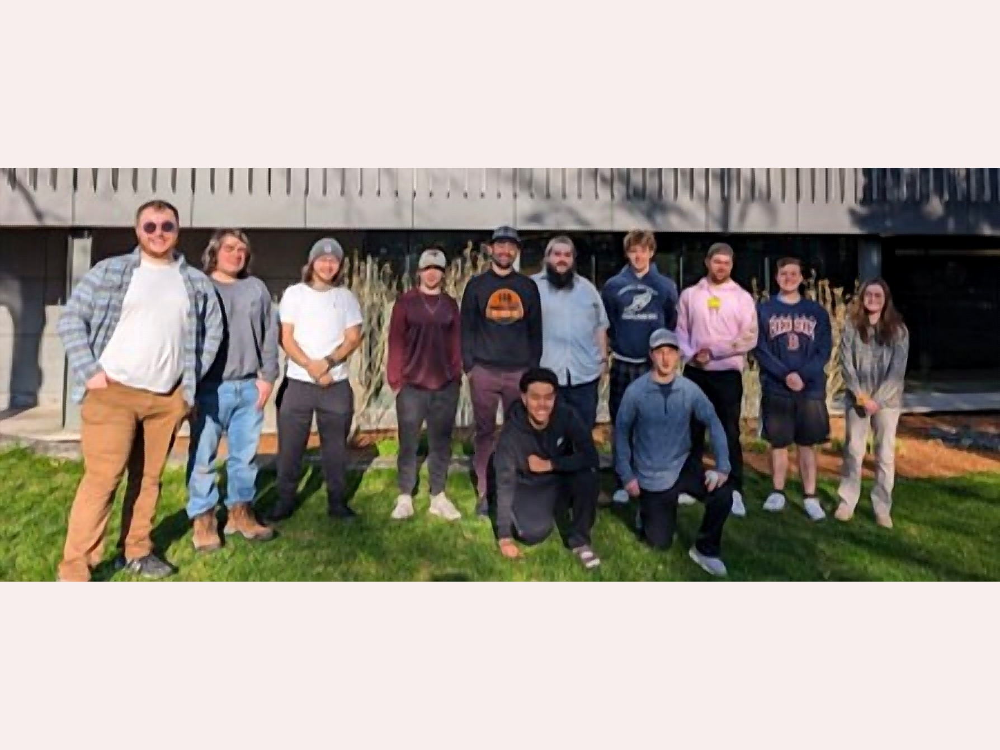

About the group
CHIRP (CHIRP-BSU) is the photonics and photonic integrated circuits (PICs) research group at Bridgewater State University (BSU), led by Dr. Samuel Serna Otálvaro and focused on nonlinear and integrated photonics. Our work spans the design, fabrication, and characterization of nonlinear photonic devices — from material-level nonlinear susceptibilities, through nanofabrication, to hybrid device architectures for telecom and mid-IR functionality on silicon and chalcogenide platforms.
The group grew out of Dr. Serna's doctoral and postdoctoral work at the Centre for Nanoscience and Nanotechnology (C2N, Université Paris-Saclay) and at MIT, where he developed and characterized nonlinear silicon and hybrid photonic devices. CHIRP continues that international collaboration — with C2N in Paris (Dr. Laurent Vivien's group), MIT (Prof. Juejun Hu's group), AIM Photonics, and partner universities in Colombia — and welcomes students and researchers interested in combining experimental, theoretical, and computational approaches to integrated optics.
CHIRP — the Collective for Holistic Interdisciplinary Research in Photonics — was founded in Spring 2022 as a weekly research group meeting open to BSU physics and photonics students, MIT and UNAL collaborators, and visiting scholars. The group also gave rise to BEAM, BSU's student chapter of OPTICA, which Dr. Serna advises alongside leading CHIRP.
Dr. Serna earned his PhD in Photonics from Université Paris-Saclay (Institut d'Optique Graduate School / C2N, 2016) and completed postdoctoral research at C2N and at MIT's Department of Materials Science and Engineering before joining BSU in 2019. His honors include the OPTICA Lifetime Ambassador distinction, the PhOM Prize for Best PhD Thesis in Optics (Université Paris-Saclay, 2017), and service as Associate Editor for SPIE Optical Engineering and on SPIE's Publications Committee.

- Principal Investigator Dr. Samuel Serna Otálvaro
- Title Assistant Professor of Physics, Photonics and Optical Engineering
- Institution Bridgewater State University
- Location Mohler-Faria Science and Mathematics Center, Room 225
- Phone 508.531.2040
- Email ssernaotalvaro@bridgew.edu
Get in touch
Contact
We're open to research collaborations and welcome inquiries from prospective graduate students interested in integrated photonics. Reach out directly or use the form.
- Email chirp.lab@bridgew.edu
- Institution Bridgewater State University
- Address [Department, Building, Bridgewater, MA]
- GitHub github.com/CHIRP-BSU